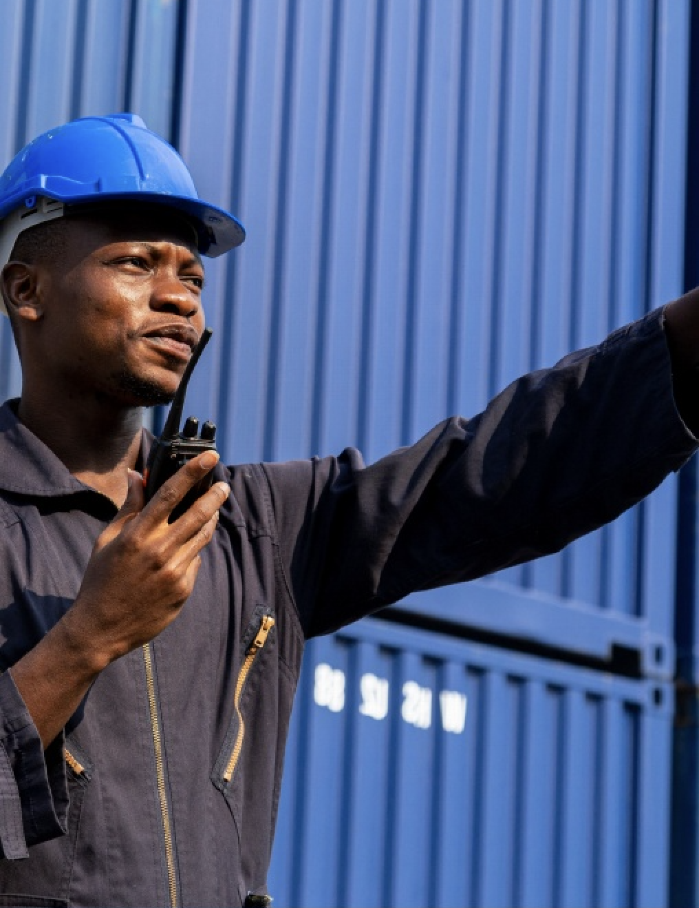

Dès qu'une marchandise arrive abîmée, une question se pose immédiatement : qui est responsable, et comment le prouver ? C'est précisément le métier du commissaire d'avaries : constater, qualifier et documenter le dommage de façon neutre, pour permettre aux parties — assureur, transporteur, chargeur — de trancher sur des bases solides.
Qu'est-ce qu'un commissaire d'avaries ?
Le commissaire d'avaries est un expert indépendant qui intervient sur les dommages subis par des marchandises ou cargaisons pendant le transport, la manutention, le stockage ou la livraison. Son travail n'est pas de désigner un coupable, mais d'établir les faits : nature et étendue du dommage, circonstances, causes probables. Ce constat objectif sert ensuite à l'indemnisation, au recours ou au règlement amiable.
Pourquoi le constat rapide change tout
Une avarie mal ou tardivement constatée, c'est un dossier fragilisé. Les marchandises sont déplacées, les traces disparaissent, les délais de réserve expirent. À l'inverse, une intervention rapide fige la situation au bon moment et préserve les droits de chacun.
Plus le constat est précoce, plus les réserves et recours sont solides.
C'est pourquoi le Réseau CEM privilégie l'intervention dans les meilleurs délais, au plus près des ports, entrepôts et corridors où surviennent les dommages.

Ce que contient un bon rapport d'avaries
Un rapport exploitable ne se limite pas à quelques photos. Il réunit :
📑 Les éléments d'un rapport solide
- Une description précise des dommages constatés ;
- L'évaluation des quantités ou lots touchés ;
- Des photographies, mesures et pièces justificatives ;
- Les réserves et déclarations utiles ;
- Une analyse des causes probables et des recommandations de suite.
Quand faire appel à un commissaire d'avaries ?
Dès qu'un doute apparaît à la réception : bris ou casse, mouille et oxydation, conteneur ouvert ou scellé rompu, écart de quantité entre chargement et livraison, litige avec un transporteur. Dans tous ces cas, un constat contradictoire clair vaut mieux qu'une discussion sans preuve.
Depuis 1962, le Réseau CEM accompagne assureurs, importateurs et transporteurs sur ce type de dossiers, dans huit pays d'Afrique de l'Ouest.